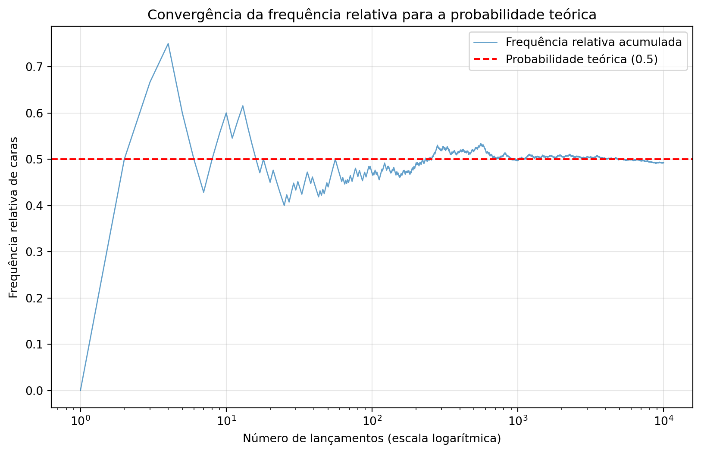
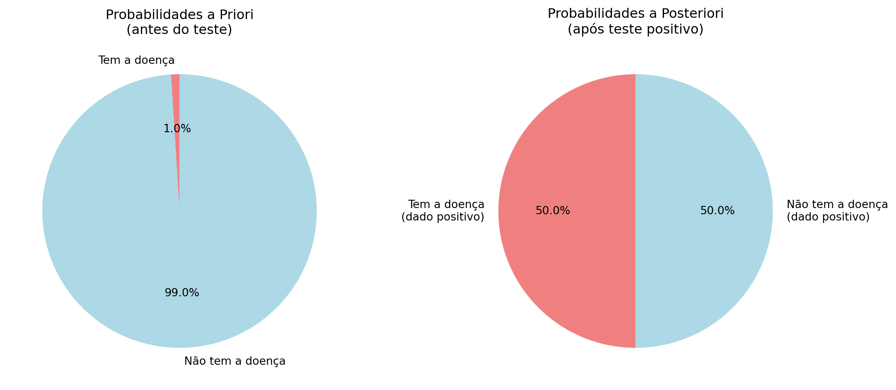
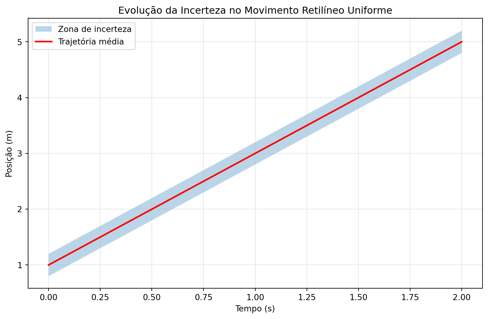
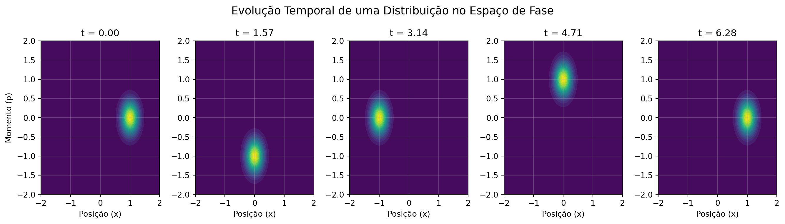
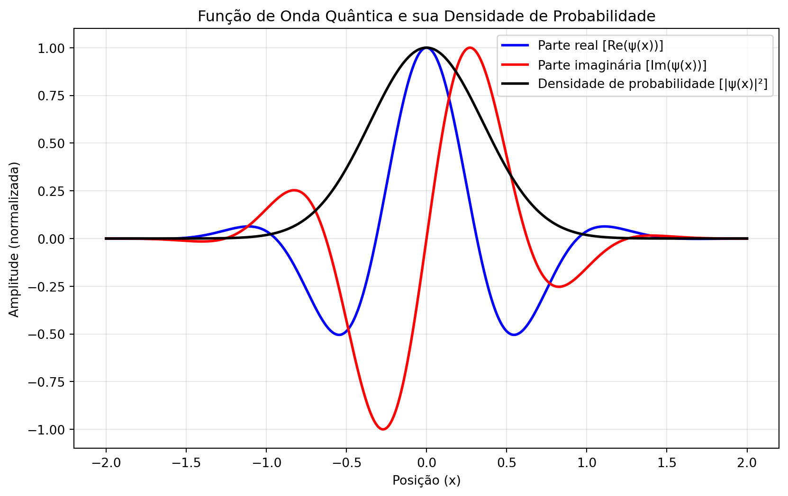

Se a matemática do contínuo (cálculo, geometria) é a linguagem natural do determinismo, descrevendo trajetórias exatas e forças precisas, a estatística é a linguagem que desenvolvemos para conversar com a incerteza.
Não usamos estatística apenas porque nossos instrumentos são imperfeitos. Em um nível fundamental, a natureza parece se recusar a dar respostas definitivas para certas perguntas. A pergunta “onde exatamente está o elétron agora?” pode não ter uma resposta. Em vez disso, a física nos oferece uma resposta diferente: “qual a probabilidade de encontrá-lo aqui ou ali se eu procurar?”.
A estatística, então, não é um paliativo para nossa ignorância; é o vocabulário necessário para descrever um aspecto intrínseco da realidade.
Dois Dialetos da Linguagem Estatística: Frequentista vs. Bayesiana
Ao adotar a linguagem estatística, encontramos dois dialetos principais, duas formas de interpretar o que a palavra probabilidade realmente significa.
A Visão Frequentista: A Probabilidade como Frequência de Ocorrência
A Ideia Central: A probabilidade de um evento é a sua frequência relativa de ocorrência em um grande número de tentativas idênticas.
Como Funciona: Imagine lançar uma moeda. A probabilidade de dar “cara” é \(P = 0.5\) porque, após lançarmos a moeda \(N\) vezes (com \(N\) muito grande), esperamos encontrar aproximadamente \(N/2\) caras. \(P = (\text{Número de sucessos}) / (\text{Número total de tentativas})\).
O Conceito de Limite: Crucialmente, a probabilidade é definida como o limite da frequência relativa quando o número de tentativas tende ao infinito: \(P(A) = \lim_{n \to \infty} \frac{n_A}{n}\). Esta é uma idealização matemática: algo que supomos existir mas nunca podemos alcançar na prática. Nunca podemos realizar infinitas tentativas, mas observamos que as frequências relativas tendem a se estabilizar around um valor específico à medida que coletamos mais dados. Esta estabilidade das frequências é o que nos permite falar em “probabilidade” no sentido frequentista.
O Foco: Está inteiramente nos dados coletados. É objetiva e baseada puramente na repetição.
Limitação: Não é fácil aplicar a eventos únicos e não repetíveis. Qual é a probabilidade frequentista de um candidato específico ganhar uma eleição? A eleição só acontece uma vez. O frequentista diria que isso não é uma probabilidade, mas sim uma certeza que nós desconhecemos.
Code
import numpy as npimport matplotlib.pyplot as plt# Configuração do experimentonp.random.seed(42) # Para reproducibilidaden_lancamentos =10000moeda_justa = [0.5, 0.5] # Probabilidades: [0] = cara, [1] = coroa# Simulação dos lançamentosresultados = np.random.choice([0, 1], size=n_lancamentos, p=moeda_justa)frequencias_relativas = np.cumsum(resultados) / np.arange(1, n_lancamentos +1)# Criação da figuraplt.figure(figsize=(10, 6))plt.plot( np.arange(1, n_lancamentos +1), frequencias_relativas, alpha=0.7, linewidth=1, label="Frequência relativa acumulada",)plt.axhline(y=0.5, color="red", linestyle="--", label="Probabilidade teórica (0.5)")# Detalhes estéticosplt.xscale("log") # Escala log para melhor visualização do comportamento inicialplt.xlabel("Número de lançamentos (escala logarítmica)")plt.ylabel("Frequência relativa de caras")plt.title("Convergência da frequência relativa para a probabilidade teórica")plt.legend()plt.grid(True, alpha=0.3)plt.show()

Figure 1: Convergência da frequência relativa de ‘caras’ para o valor teórico de 0.5
A Visão Bayesiana: A Probabilidade como Grau de Crença
A Ideia Central: A probabilidade é uma medida do grau de crença ou grau de plausibilidade que temos em uma hipótese, com base no conhecimento disponível.
Como Funciona: Começamos com uma probabilidade a priori: uma estimativa inicial de nossa crença. Então, coletamos dados. Por fim, usamos o Teorema de Bayes para atualizar nossa crença, calculando uma nova probabilidade a posteriori.
Teorema de Bayes: A ferramenta fundamental para atualizar crenças é dada por:
\[
P(H|D) = \frac{P(D|H) \cdot P(H)}{P(D)}
\]
Onde:
\(P(H|D)\): Probabilidade a posteriori da hipótese H dado os dados D
\(P(D|H)\): Verossimilhança - probabilidade dos dados D se a hipótese H for verdadeira
\(P(H)\): Probabilidade a priori da hipótese H
\(P(D)\): Probabilidade total dos dados (constante de normalização)
O Foco: Está na atualização do conhecimento. É subjetiva no sentido de que começa com um estado de conhecimento prévio, mas é completamente objetiva na forma como esse conhecimento deve ser atualizado diante de novos dados.
Vantagem: É poderosa para lidar com eventos únicos, incorporar conhecimento prévio e aprender continuamente.
Exemplo Detalhado: Teste de Doença Rara
Contexto: Uma doença afeta 1% da população. Um teste tem 99% de precisão.
Definindo as variáveis:
\(H\): Hipótese de ter a doença
\(\neg H\): Hipótese de não ter a doença
\(D\): Dado do teste positivo
Probabilidades a priori:
\(P(H) = 0.01\) (1% da população tem a doença)
\(P(\neg H) = 0.99\) (99% não tem)
Verossimilhanças (acurácia do teste):
\(P(D|H) = 0.99\) (99% de chance de positivo se doente)
\(P(D|\neg H) = 0.01\) (1% de chance de falso positivo)
Probabilidade total dos dados (\(P(D)\)): \[P(D) = P(D|H) \cdot P(H) + P(D|\neg H) \cdot P(\neg H)\]\[P(D) = (0.99 \times 0.01) + (0.01 \times 0.99) = 0.0099 + 0.0099 = 0.0198\]
Aplicando o Teorema de Bayes: \[P(H|D) = \frac{P(D|H) \cdot P(H)}{P(D)} = \frac{0.99 \times 0.01}{0.0198} = \frac{0.0099}{0.0198} = 0.5\]
Code
import matplotlib.pyplot as pltimport numpy as np# Dados do problemaP_H =0.01# Probabilidade a priori de ter a doençaP_negH =0.99# Probabilidade a priori de não ter a doençaP_D_dado_H =0.99# Probabilidade de teste positivo se estiver doenteP_D_dado_negH =0.01# Probabilidade de teste positivo se não estiver doente# Calculando a probabilidade total P(D)P_D = (P_D_dado_H * P_H) + (P_D_dado_negH * P_negH)# Calculando a probabilidade a posteriori P(H|D)P_H_dado_D = (P_D_dado_H * P_H) / P_D# Criando visualizaçãofig, (ax1, ax2) = plt.subplots(1, 2, figsize=(12, 5))# Gráfico 1: Probabilidades a priorilabels_priori = ["Tem a doença", "Não tem a doença"]values_priori = [P_H, P_negH]colors_priori = ["lightcoral", "lightblue"]ax1.pie( values_priori, labels=labels_priori, autopct="%1.1f%%", colors=colors_priori, startangle=90,)ax1.set_title("Probabilidades a Priori\n(antes do teste)")# Gráfico 2: Probabilidades a posteriorilabels_posteriori = ["Tem a doença\n(dado positivo)","Não tem a doença\n(dado positivo)",]values_posteriori = [P_H_dado_D, 1- P_H_dado_D]ax2.pie( values_posteriori, labels=labels_posteriori, autopct="%1.1f%%", colors=colors_priori, startangle=90,)ax2.set_title("Probabilidades a Posteriori\n(após teste positivo)")plt.tight_layout()plt.show()print(f"Probabilidade a posteriori P(H|D) = {P_H_dado_D:.3f} ({P_H_dado_D*100:.1f}%)")

Figure 2: Análise Bayesiana do teste de doença
Probabilidade a posteriori P(H|D) = 0.500 (50.0%)
Interpretação do Resultado: Apesar do teste ter 99% de precisão, a probabilidade de realmente ter a doença após um teste positivo é de apenas 50%. Isso ocorre porque a doença é muito rara (apenas 1% da população), então mesmo com uma baixa taxa de falsos positivos (1%), o número absoluto de falsos positivos é similar ao número de verdadeiros positivos.
A visão Bayesiana nos ensina que dados não falam por si só - eles só ganham significado quando interpretados à luz do conhecimento prévio existente.
Distribuição de Probabilidade vs Probabilidade: A Importância da Medida
Até agora, trabalhamos com espaços de estados discretos (cara/coroa, doente/saudável). Mas na física, frequentemente lidamos com espaços contínuos, como a posição de uma partícula ao longo de uma linha.
Aqui surge uma diferença fundamental: em espaços contínuos, a probabilidade de qualquer estado específico é zero.
Por que probabilidade zero não significa impossibilidade?
Considere uma partícula que pode estar em qualquer ponto do intervalo [0, 1]. Se atribuíssemos probabilidades iguais a cada ponto, teríamos um paradoxo:
Probabilidade de cada ponto: \(P(x) = \frac{1}{\infty} = 0\)
Mas a probabilidade total no intervalo: \(\sum_{x=0}^1 P(x) = 0 + 0 + 0 + \cdots = 0\)
Isso viola o axioma fundamental de que a probabilidade total deve ser 1!
A Solução: Densidade de Probabilidade
A solução matemática é trabalhar não com probabilidades de pontos, mas com probabilidades de intervalos. Introduzimos uma função densidade de probabilidade \(\rho(x)\) tal que:
\[
P(a \leq x \leq b) = \int_a^b \rho(x) \dd x.
\]
Propriedades fundamentais:
\(\rho(x) \geq 0\) para todo \(x\)
\(\int_{-\infty}^{\infty} \rho(x) \dd x = 1\)
A probabilidade de encontrar a partícula exatamente no ponto \(x\) é: \[
P(x = x_0) = \int_{x_0}^{x_0} \rho(x) \dd x = 0.
\]
Mas a densidade \(\rho(x_0)\) nos diz o quão “provável” é a vizinhança de \(x_0\).
\(\rho(x)\) não é uma probabilidade: É uma densidade. Suas unidades são [probabilidade/comprimento].
Apenas integrais de \(\rho(x)\) têm significado probabilístico: \(P(a \leq x \leq b) = \int_a^b \rho(x) \dd x\).
Valores relativos importam: \(\rho(x_2)>\rho(x_1)\) significa que intervalos infinitesimais around \(x_2\) são mais prováveis que around \(x_1\).
Esta transição conceitual é fundamental para a mecânica quântica, onde a função de onda \(\psi(x)\) está relacionada à densidade de probabilidade por: \[
\rho(x) = |\psi(x)|^2.
\] Apesar de \(\psi(x)\) poder ter valores em qualquer ponto, apenas integrais de \(|\psi(x)|^2\) sobre intervalos finitos têm interpretação probabilística direta.
Do Estado Determinístico à Descrição Probabilística
O Espaço de Estados e o Determinismo Clássico
Na mecânica newtoniana, o estado completo de uma partícula em 1D é descrito por duas variáveis: posição \(x\) e velocidade \(v\) (ou momento \(p = mv\)). Juntas, elas definem um ponto no espaço de fase \((x, p)\).
A evolução temporal é governada pelas leis de Newton: \[
\frac{\dd x}{\dd t} = v, \quad \frac{dp}{\dd t} = F(x)
\]
Se conhecermos exatamente o estado inicial \((x_0, p_0)\) no instante \(t_0\), podemos (em princípio) determinar univocamente o estado \((x(t), p(t))\) em qualquer instante futuro ou passado. Esta é a essência do determinismo laplaciano.
A Quebra Prática do Determinismo
Na prática, no entanto, nunca conhecemos o estado inicial com precisão infinita:
Limitações instrumentais: Medidas sempre têm incertezas experimentais
Preparação imperfeita: Sistemas reais nunca estão perfeitamente isolados
Complexidade: Sistemas com muitas partículas são praticamente intratáveis
Mais fundamentalmente, na mecânica quântica, o próprio princípio da incerteza de Heisenberg proíbe o conhecimento simultâneo e exato de \(x\) e \(p\).
A Necessidade da Descrição Probabilística
Diante dessa impossibilidade prática (e fundamental) de determinar o estado exato, adotamos uma descrição probabilística:
Em vez de um ponto \((x_0, p_0)\) no espaço de fase, temos uma distribuição de probabilidade \(\rho(x, p, t_0)\) que representa nosso conhecimento sobre o estado do sistema.
Interpretação: \(\rho(x, p, t_0) \dd x \dd p\) representa a probabilidade de encontrar o sistema em um elemento infinitesimal do espaço de fase around do ponto \((x, p)\) no instante \(t_0\).
Evolução Temporal da Distribuição
A grande vantagem desta abordagem é que podemos evoluir temporalmente toda a distribuição:
Dada \(\rho(x, p, t_0)\), a distribuição em qualquer instante posterior \(t\) é determinada pela dinâmica subjacente: \[
\rho(x, p, t) = \rho(x_0(x,p,t), p_0(x,p,t), t_0)
\] onde \((x_0(x,p,t), p_0(x,p,t))\) é o estado inicial que evolui para \((x, p)\) no tempo \(t\) (seguindo as leis de Newton).
Exemplo Concreto: Cinemática 1D com Incertezas
Caso 1: Movimento Retilíneo Uniforme (MRU)
Suponha uma partícula com velocidade constante \(v\), mas com posição inicial incerta:
Equação de movimento: \(x(t) = x_0 + v t\)
Incerteza inicial: \(x_0 = 1.0 \pm 0.2\) m (distribuição uniforme)
Velocidade: \(v = 2.0\) m/s (conhecida exatamente)
Code
import numpy as npimport matplotlib.pyplot as plt# Parâmetrosv =2.0# m/sx0_min, x0_max =0.8, 1.2# intervalo inicial de posiçãot = np.linspace(0, 2, 100) # 0 a 2 segundos# Evolução da incertezax_min = x0_min + v * tx_max = x0_max + v * tplt.figure(figsize=(10, 6))plt.fill_between(t, x_min, x_max, alpha=0.3, label="Zona de incerteza")plt.plot(t, (x0_min + x0_max) /2+ v * t, "r-", linewidth=2, label="Trajetória média")plt.xlabel("Tempo (s)")plt.ylabel("Posição (m)")plt.title("Evolução da Incerteza no Movimento Retilíneo Uniforme")plt.legend()plt.grid(True, alpha=0.3)plt.show()

Figure 4: Evolução da incerteza posicional no MRU
Interpretação: A incerteza inicial de \(\pm0.2\)m se propaga sem amplificação: a largura da distribuição permanece constante no tempo.
Caso 2: Movimento Uniformemente Acelerado (MUA)
Agora considere queda livre com aceleração constante, mas com incertezas tanto na posição quanto na velocidade iniciais:
Equação de movimento: \(x(t) = x_0 + v_0 t + \frac{1}{2} a t^2\)
Incertezas: \(x_0 = 0 \pm 0.1\) m, \(v_0 = 0 \pm 0.2\) m/s
Aceleração: \(a = -9.8\) m/s²
Code
# Parâmetrosa =-9.8# m/s^2x0_sigma =0.1# incerteza inicial na posiçãov0_sigma =0.2# incerteza inicial na velocidade# Tempot = np.linspace(0, 0.2, 100)# Evolução da incerteza total (propagação de erros)sigma_x = np.sqrt(x0_sigma**2+ (v0_sigma * t) **2+ (0.5* a * t**2) **2)plt.figure(figsize=(10, 6))plt.plot( t, 0.5* a * t**2, "b-", linewidth=2, label="Trajetória nominal ($x_0=0, v_0=0$)")plt.fill_between( t,0.5* a * t**2- sigma_x,0.5* a * t**2+ sigma_x, alpha=0.3, color="red", label="Zona de incerteza ($\pm\sigma$)",)plt.xlabel("Tempo (s)")plt.ylabel("Posição (m)")plt.title("Evolução da Incerteza no Movimento Uniformemente Acelerado")plt.legend()plt.grid(True, alpha=0.3)plt.show()print(f"Incerteza inicial: $\sigma_x$ = {x0_sigma:.3f} m")print(f"Incerteza final (t=1s): $\sigma_x$ = {sigma_x[-1]:.3f} m")
Figure 5: Evolução da incerteza no movimento uniformemente acelerado
Incerteza inicial: $\sigma_x$ = 0.100 m
Incerteza final (t=1s): $\sigma_x$ = 0.224 m
Interpretação: A incerteza cresce rapidamente com o tempo devido à contribuição da incerteza inicial na velocidade, que é amplificada pelo termo quadrático.
Lição Fundamental
Estes exemplos mostram que:
Mesmo com leis determinísticas, incertezas iniciais se propagam
A forma da propagação depende da dinâmica do sistema
Sistemas com não-linearidades (como o termo t²) podem amplificar rapidamente incertezas iniciais
Esta é a ponte entre o determinismo das equações de Newton e a necessidade de descrições estatísticas na prática experimental!
Exemplo Concreto: Oscilador Harmônico
Neste exemplo, vamos estudar o comportamento de um oscilador harmônico com incertezas iniciais na posição e na velocidade.
Code
import numpy as npimport matplotlib.pyplot as pltfrom scipy.integrate import odeintfrom scipy.stats import multivariate_normal# Sistema físico: oscilador harmônicodef oscilador_harmonico(estado, t): x, p = estado k =1.0# constante elástica m =1.0# massa dxdt = p / m dpdt =-k * xreturn [dxdt, dpdt]# Condição inicial (distribuição)x0, p0 =1.0, 0.0# centro da distribuiçãosigma_x, sigma_p =0.2, 0.3# incertezas iniciais# Tempos para evoluçãot = np.linspace(0, 2* np.pi, 5) # Um período completo# Criar grid no espaço de fasex = np.linspace(-2, 2, 100)p = np.linspace(-2, 2, 100)X, P = np.meshgrid(x, p)# Visualizaçãofig, axes = plt.subplots(1, len(t), figsize=(14, 4))fig.suptitle("Evolução Temporal de uma Distribuição no Espaço de Fase", fontsize=14)for i, time inenumerate(t):# Para cada tempo, evoluir a distribuição# (Aproximação: para sistema linear, a distribuição gaussiana permanece gaussiana)# Calcular a evolução do centro da distribuição estado_evoluido = odeint(oscilador_harmonico, [x0, p0], [0, time])[-1] x_evol, p_evol = estado_evoluido# Distribuição no tempo t (aproximação) pos = np.dstack((X, P)) cov = [[sigma_x**2, 0], [0, sigma_p**2]] # Matriz de covariância rho = multivariate_normal([x_evol, p_evol], cov).pdf(pos)# Plot ax = axes[i] contour = ax.contourf(X, P, rho, levels=20, cmap="viridis") ax.set_xlabel("Posição (x)")if i ==0: ax.set_ylabel("Momento (p)") ax.set_title(f"t = {time:.2f}") ax.grid(True, alpha=0.3) ax.set_xlim(-2, 2) ax.set_ylim(-2, 2)plt.tight_layout()plt.show()

Figure 6: Evolução temporal de uma distribuição no espaço de fase
Implicações Fundamentais
Determinismo vs. Previsibilidade: Embora a dinâmica subjacente seja determinística, nossa capacidade de previsão é limitada pela incerteza inicial.
Espalhamento da Informação: Em sistemas caóticos, pequenas incertezas iniciais crescem exponencialmente, limitando drasticamente o horizonte de previsibilidade.
Conexão com Mecânica Quântica: Na MQ, a função de onda \(\psi(x)\) vive em um espaço de Hilbert, mas a densidade de probabilidade \(|\psi(x)|^2\) representa nossa informação sobre o sistema, de forma análoga à \(\rho(x, p)\) na física clássica.
Esta transição do ponto no espaço de fase para distribuições de probabilidade marca a passagem fundamental do determinismo ideal para a descrição estatística prática que permeia toda a física moderna.
A Mecânica Quântica e a Natureza Intrinsecamente Probabilística da Realidade
Tudo que discutimos até agora pode ser visto como uma “correção prática” ao determinismo: não sabemos medir perfeitamente, então usamos estatística. Mas a Mecânica Quântica (MQ) traz uma revolução muito mais profunda.
A Quebra Fundamental do Determinismo
Na MQ, mesmo em condições ideais, com instrumentos perfeitos:
O Princípio da Incerteza de Heisenberg proíbe o conhecimento simultâneo e exato de posição e momento: \[\sigma_x \sigma_p \geq \frac{\hbar}{2}\] Isso não é uma limitação tecnológica; é uma propriedade fundamental da natureza.
O resultado de uma medida individual é fundamentalmente imprevisível. Podemos saber tudo que é possível saber sobre um sistema (sua função de onda \(\psi(x)\)) e ainda assim só poder prever probabilidades para o resultado de uma medida.
A Função de Onda: Uma Entidade Probabilística
O estado de um sistema quântico é descrito pela função de onda \(\psi(x)\), uma entidade matemática complexa. A interpretação física foi proposta por Max Born: \[|\psi(x)|^2 dx = \text{Probabilidade de encontrar a partícula entre } x \text{ e } x+dx\]
A evolução temporal de \(\psi(x)\) é governada pela Equação de Schrödinger, uma equação diferencial perfeitamente determinística. Apesar disso, os resultados de medições individuais são fundamentalmente probabilísticos.
Code
import numpy as npimport matplotlib.pyplot as plt# Parâmetros do pacote de onda gaussianox0 =0.0# Centro do pacotesigma =0.5# Largurak0 =5.0# Número de onda médio# Espaço de configuraçãox = np.linspace(-2, 2, 1000)# Função de onda: pacote gaussianopsi = np.exp(-((x - x0) **2) / (2* sigma**2)) * np.exp(1j* k0 * x)psi_real = np.real(psi)psi_imag = np.imag(psi)psi_mod_sq = np.abs(psi) **2# Densidade de probabilidade# Normalização para melhor visualizaçãopsi_real /= np.max(np.abs(psi_real))psi_imag /= np.max(np.abs(psi_imag))psi_mod_sq /= np.max(psi_mod_sq)# Plotplt.figure(figsize=(10, 6))plt.plot(x, psi_real, "b-", linewidth=2, label="Parte real [Re(ψ(x))]")plt.plot(x, psi_imag, "r-", linewidth=2, label="Parte imaginária [Im(ψ(x))]")plt.plot(x, psi_mod_sq, "k-", linewidth=2, label="Densidade de probabilidade [|ψ(x)|²]")plt.xlabel("Posição (x)")plt.ylabel("Amplitude (normalizada)")plt.title("Função de Onda Quântica e sua Densidade de Probabilidade")plt.legend()plt.grid(True, alpha=0.3)plt.show()

Figure 7: Partes real e imaginária, e módulo ao quadrado de um pacote de onda gaussiano
Interpretação Física
Partes Real e Imaginária: Componentes matemáticas da função de onda. Não são diretamente mensuráveis.
Módulo Quadrado (\(|\psi(x)|^2\)): Densidade de probabilidade fisicamente mensurável. Representa a probabilidade por unidade de comprimento de encontrar a partícula na posição \(x\).
O Papel da Equação de Schrödinger
A equação: \[i\hbar\frac{\partial}{\partial t}\psi(x,t) = \left(-\frac{\hbar^2}{2m}\frac{\partial^2}{\partial x^2} + V(x)\right)\psi(x,t)\]
determina deterministicamente como \(\psi(x,t)\) evolui no tempo. No entanto, o que esta equação evolui é uma distribuição de probabilidade.
Esta combinação - equação de evolução determinística para uma entidade probabilística - constitui a base conceitual da mecânica quântica.
A Relação Determinismo-Estatística
A MQ nos apresenta um contraste definitivo:
A equação de evolução (Schrödinger) é perfeitamente determinística.
Os resultados das medições são intrinsecamente probabilísticos.
Portanto, a MQ é a realização máxima do tema desta aula: o casamento inevitável entre o determinismo das leis fundamentais e a estatística necessária para descrever os fenômenos mensuráveis.
Ela eleva a estatística de uma ferramenta para lidar com nossa ignorância a um marco central da descrição da realidade física.
Conclusão: Do Micro ao Macro, uma Única Linguagem
Da trajetória de um planeta (onde erros iniciais se amplificam) à posição de um elétron (onde a probabilidade é inerente), passando por testes médicos e previsões do tempo, encontramos uma mesma linguagem: a linguagem das probabilidades.
O determinismo nos diz como as possibilidades evoluem; a estatística nos diz como lidar com qual possibilidade se realizará.